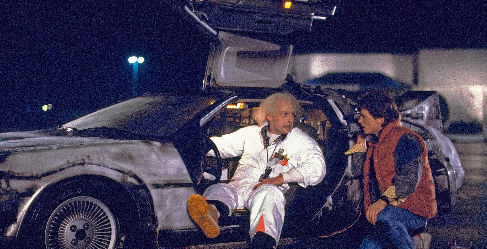

About Marty
Marty is an aspiring guitarist who never turns down a fight
Marty and Doc Brown
Marty's Characteristics
- He can play guitar
- He can't stand being called "chicken"
- His goal is to make sure his parents fall in love so that he doesn't disappear
Marty's Friends
Marty has two close friends. Click on the links below to read more about them: